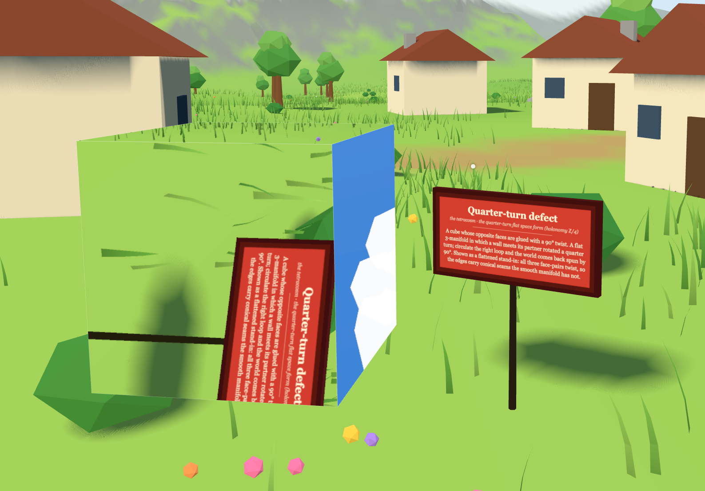

A real-time illustration of topological defects — regions of space cut out and re-identified by rigid motions — and a record of the mathematics, the build, and the rendering behind it.

spinorial — admits spin-½ non-spinorial — integer spin
A topological defect in this project is a bounded cell of space — a polyhedron — whose boundary faces have been identified in pairs by rigid motions. The cell is a fundamental domain; the gluing maps are the generators of its fundamental group. Quotient the cell by those identifications and you get a closed three-manifold, or at least a faithful local model of one. To an observer inside, there is no wall: cross a face and you re-enter through its partner, your path continuing as though the two faces were the same place.
Each identified face carries a gluing isometry — a rotation $R$ and a translation $\mathbf{t}$, applied in the cell's local frame as
$$ g(\mathbf{x}) = R\,\mathbf{x} + \mathbf{t}. $$The familiar “twist about the face's own outward normal” family is the special case $R = R(\hat{\mathbf n},\theta)$ and $\mathbf{t} = -D\,\hat{\mathbf n}$, where $D$ is the cell's width and $\theta$ the twist angle. Faces may instead supply an arbitrary $(R,\mathbf{t})$ — that is what the Hantzsche–Wendt cell needs, since its faces glue by half-turns about in-plane axes rather than about their normals.
By Thurston's geometrization, every closed 3-manifold is assembled from pieces modelled on eight homogeneous geometries. Three of them have constant sectional curvature — flat $\mathbf{E}^3$, spherical $\mathbf{S}^3$, hyperbolic $\mathbf{H}^3$ — and their compact quotients are the space forms. Those are exactly what is faithfully renderable here, and the scene draws one of each:
| Cell | Manifold | Geometry | Spin |
|---|---|---|---|
| Torus (no twist) | 3-torus $T^3$ — the torocosm | flat | |
| Half-turn cube | dicosm (holonomy $\mathbb{Z}/2$) | flat | |
| Third-turn prism | tricosm (holonomy $\mathbb{Z}/3$) | flat | |
| Quarter-turn cube | tetracosm (holonomy $\mathbb{Z}/4$) | flat | |
| Sixth-turn prism | hexacosm (holonomy $\mathbb{Z}/6$) | flat | |
| Hantzsche–Wendt | didicosm (holonomy $\mathbb{Z}/2\times\mathbb{Z}/2$) | flat | |
| Octahedral cell | a spherical space form | spherical | |
| Dodecahedral, 36° | Poincaré homology sphere $S^3/2I$ | spherical | |
| Lens cell, $2\pi/7$ | lens space $L(7,1)$ | spherical | |
| Lens cell, $4\pi/7$ | lens space $L(7,2)$ | spherical | |
| Dodecahedral, 108° | Seifert–Weber space | hyperbolic |
The six flat ones are the orientable platycosms — the complete Bieberbach list, named by Conway and Rossetti. The lens spaces $L(7,1)$ and $L(7,2)$ sit side by side as the famous pair that is homotopy-equivalent yet not homeomorphic. And the Seifert–Weber space is the Poincaré dodecahedron with one number changed: glue the opposite pentagons by $108^\circ$ instead of $36^\circ$ and the cell tips out of spherical geometry into hyperbolic. Same shape, different universe.
A faithful flat space form twists only some of its face-pairs. The cube cells here twist all three, which is what makes them sit still and read clearly — but it turns them into flattened cone-manifold stand-ins: their edges carry a deficit angle, and the deficit shows up as a visible seam in the image where two faces meet. That is the genuine physics of such a defect, not a rendering bug. The torus, twisting nothing, is the only seam-free cell.
The sign colours encode one deeper property. In 1980 Friedman and Sorkin showed that the gravitational field of certain asymptotically-flat 3-manifolds can carry half-integer angular momentum — a localized lump of nontrivial spatial topology, a geon, can behave like a fermion, with no spinning matter anywhere, from topology alone.
The mechanism is the belt trick. A $2\pi$ rotation of the geon, performed at infinity, is a diffeomorphism of the spatial slice. The geon is spinorial precisely when that $2\pi$ rotation is not deformable to the identity through motions fixing the boundary — while the $4\pi$ rotation always is. That is the $\mathbb{Z}_2$ of $\pi_1\big(\mathrm{SO}(3)\big)$ made physical: a belt given one full twist cannot be undone by sliding it, but two full twists can.
Which manifolds are spinorial was settled by Hendriks and applied to geons by Friedman and Witt. The result is strikingly clean — the only non-spinorial prime 3-manifolds are
$$ S^3, \qquad S^2\times S^1, \qquad \text{and the lens spaces } L(p,q). $$Everything else is spinorial. So almost every cell here is red; yellow is reserved for the two lens spaces (and would also mark the $S^2\times S^1$ wormhole handles, of which more in Part II).
One convention is worth stating plainly, because it is easy to get wrong. A rotated-face cube — a “Friedman–Sorkin” cell — is itself spin-½, not spin-1. The twist angle sets the holonomy representation of the identification, not the geon's own statistics. Spinoriality is external to the holonomy $R$: the plain translation torus and the $90^\circ$-twisted cube are spin-½ for the very same reason — the $\mathbb{Z}_2$ of $\pi_1(\mathrm{SO}(3))$ and the belt trick — and differ only in their internal holonomy (trivial versus $\mathbb{Z}/4$). The twist is not the spin.
There is one rendering trick under everything. For each visible face, the renderer builds a virtual camera: the real camera pushed through that face's world gluing, sharing the same projection matrix. It renders the scene from the virtual camera into an off-screen target, clipped at the exit face, then draws the real face as a quad whose fragment shader samples that target at the fragment's own screen coordinates.
Because both cameras share one projection, a world point visible through the face lands on the same screen pixel in both renders — so sampling by screen position is pixel-exact for a planar face. That single fact is why the flat polyhedral portals look seamless, and (as Part IV explains) why curved portals never quite did.
Flying through a defect applies the full gluing isometry to the observer, orientation and all. Through a horizontal-axis face of the quarter-turn cube you emerge rolled by $90^\circ$, seeing exactly what the portal had been showing. Yaw and pitch are re-derived from the new forward direction; whatever roll remains — the angle $\theta$ by which “up” was banked — becomes the initial condition of a damped harmonic oscillator with equilibrium at upright. The view swings level, overshoots slightly, bobs, and settles in about a second, like a bee righting itself.
The wobble fires only when $\theta \ne 0$. A pure-yaw crossing (a vertical-axis quarter-turn) or a pure translation (the torus) leaves $\theta = 0$ and the view stays dead steady. Gating the kick on whether the crossing genuinely banks you — rather than firing it on every crossing — was one of those small correctnesses that the simulation lives or dies by.
The setting is a stylized open landscape in the spirit of Breath of the Wild — rolling hills, a winding river under a stone double-arch bridge, cottages, scattered boulders, a ring of mountains, drifting clouds, wind-animated grass, the odd seagull. A single layered height function $h(x,z)$ — hills plus ridged mountains plus a river carve plus cottage pads plus the bridge deck — is the one source of truth for geometry, colour, object placement, and collision, all driven by seeded value noise so the world is byte-for-byte reproducible. The observer is a free-floating camera, trapped below a ceiling, above the terrain, and inside the mountain ring.
Getting the bridge approaches to feel walkable, rather than like cliffs, turned out to need a real road-engineering pass: an analytic ramp wasn't enough, so the grade is solved by a forward–backward sweep against the actual terrain, capped at a true 16% maximum. A small thing, but the kind of small thing that separates a world you enjoy exploring from one you fight.
Two non-spinorial wormhole pairs — a cubic handle and a spherical antipodal handle — were built, chased for a long while, and then taken out. They are worth describing because the reason they failed is instructive. The acceptance bar was simple to state:
Everything is locally Minkowskian, so there can't be sudden jumps. — the standing requirement: a crossing must be $C^0$ continuous
What you see through a mouth the instant before crossing must equal what you see the instant after. For the sphere, three things the project wanted turned out to be mutually incompatible, and not by accident:
The cube wormhole could in principle satisfy nesting and seamlessness together — it has real thickness and planar, exact faces — given the right oblique clip at the partner mouth. The antipodal sphere is fundamentally about non-orientability, and a reflection lives in the other component of $\mathrm{O}(3)$ from the identity: there is no continuous path of rotations from “not mirrored” to “mirrored,” so the flip has to be an instant snap at the screen periphery. The full postmortem — and a concrete plan for a clean redo, cubemap sampling and all — is preserved so the dead ends never need re-walking.
The whole simulation is Three.js on WebGL2, written as plain ES modules with no build step. Three.js is vendored locally and resolved through an import map, so the project runs fully offline — open the page and it works, no toolchain, no bundler, no network. That constraint is a feature: it keeps the thing legible and durable, and it means the rendered output is exactly the source.
The portal passes render into pooled off-screen targets at a tunable resolution, with an oblique clip plane placed at each exit face and soft (variance) shadows over the landscape. Defects past a cutoff distance skip their portal pass entirely — a half-metre cell is sub-pixel from across the valley anyway.
The desktop Navigator is the full first-person world. For phones, the same defect catalog drives a Gallery: a grid of windows, each a single defect you can orbit on its own. Posters are baked lazily, one at a time, as each window nears the viewport — an off-screen frame renders the first image, which is swapped for a live, interactive view only when you tap. Just one window runs live at a time, so a page of eleven defects stays light. A small build script can also inline the entire gallery — code, catalog, and all — into a single self-contained HTML file.
The claims this project makes are mathematical, so they are checked mathematically. A headless harness — Node.js driving the same Three.js — verifies the invariants deterministically before any version is called stable:
That harness is what let the codebase take on the rigid-isometry refactor — generalizing every face from a bare (normal, angle) to an explicit $(R,\mathbf{t})$ — needed for the Hantzsche–Wendt cell, while proving the older twist cells still reproduced their previous behaviour to the bit.
The entire project serializes into a single annotated document that concatenates every file; a small unpacker writes it back out to a working folder, and the standalone builder produces the one-file mobile bundle from it. The simulation, the gallery, the test harness, and the build tools all live in one readable artifact — the same discipline the website itself follows.
Two limits are practical. Defects are hidden during portal passes, so a defect seen through another defect — including itself, once rotations are in play — is invisible; recursive passes with a depth cap are the planned fix. And within a few centimetres of a face the camera's near plane can clip a thin sliver. Neither changes what the simulation is for.
The deep limit is more interesting, and it is a theorem. By Beltrami's theorem, a geometry admits a chart in which every geodesic is a straight line if and only if it has constant sectional curvature. The three constant-curvature geometries — $\mathbf{E}^3$, $\mathbf{S}^3$, $\mathbf{H}^3$ — are therefore the only projectively flat ones. That is precisely why the flattened spherical and hyperbolic cells are even approximately renderable: a rigid isometry maps straight light rays to straight light rays, the real and virtual cameras can share one perspective projection, and the only thing fudged is interior curvature while the gluing stays exact on the central ray.
The other four anisotropic Thurston geometries — Nil, Sol, $\mathbf{H}^2\times\mathbb{R}$, and $\widetilde{\mathrm{SL}_2(\mathbb{R})}$ — are not projectively flat, and no linear or projective warp of the rendered image can straighten their geodesics. Sol's geodesics are chaotic; Nil's are helical; the two product-like geometries have a distinguished fibre direction that can't be straightened at the same time as the hyperbolic factor. The error is structural — present everywhere except the central ray — not the small off-axis drift a flat portal tolerates. Rendering these faithfully needs a different paradigm entirely: per-pixel geodesic ray-marching inside the geometry, integrating the actual geodesic flow, as Coulon, Matsumoto, Segerman and Trettel do for all eight Thurston geometries. That is a second renderer living beside this one, not a transform bolted on. Nil and Sol can still appear here as honest gluing-only stand-ins — their identification patterns are linear — but their signs say so.
And one case fails for the opposite reason worth noting: the figure-eight knot complement is hyperbolic, so its optics are tractable, but it is cusped and non-compact, built from ideal tetrahedra with vertices at infinity. Its obstruction is topological, not optical — there is no bounded convex cell to put a portal on.